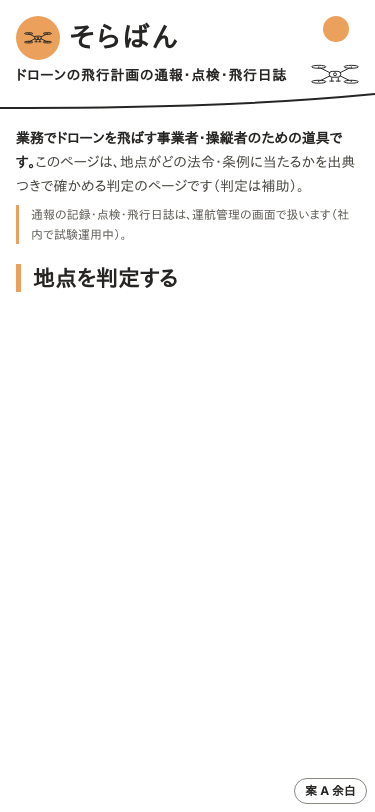
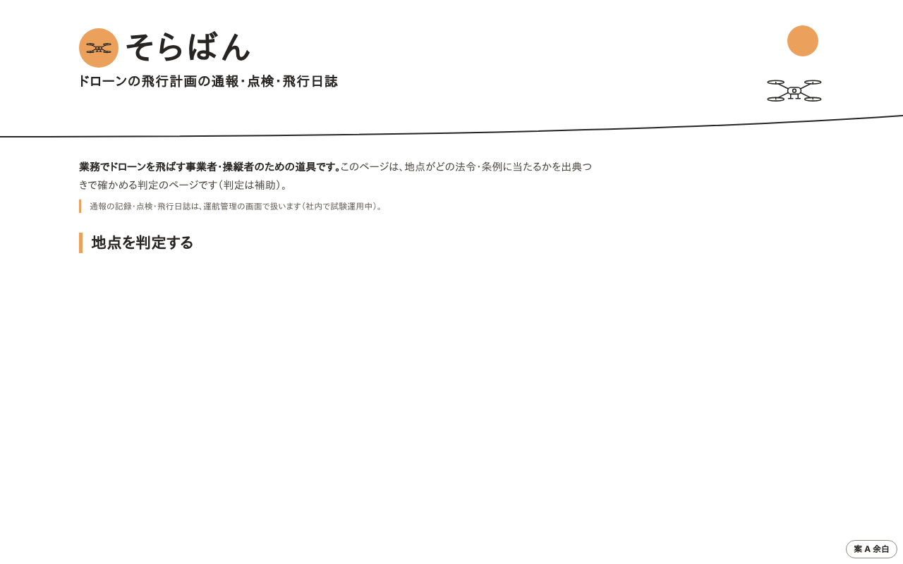
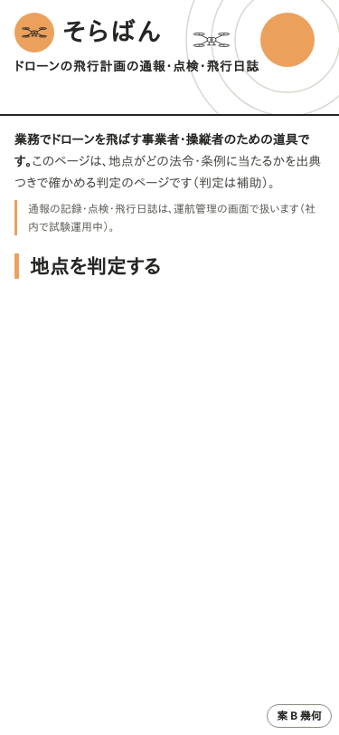
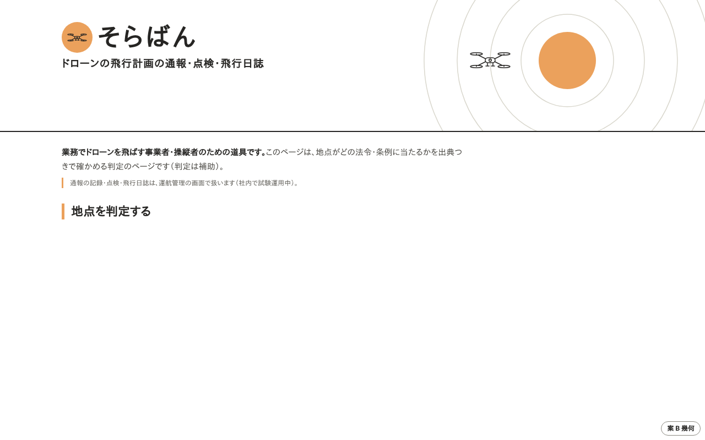
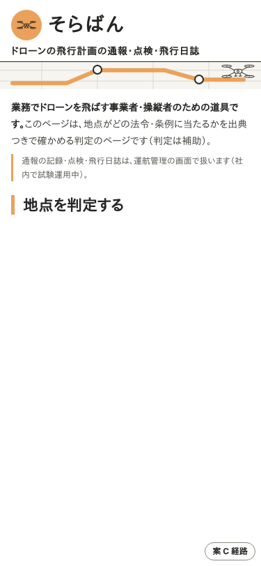
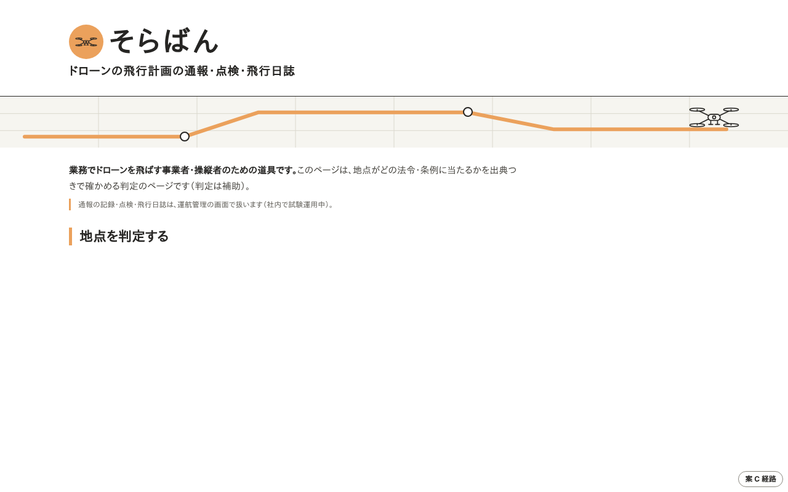

公開の「/」のヘッダー 3 案（静的な見本）
今のヘッダー（丘の波線・雲・太陽・ドローンの線画が文字と重なる）を作り直す案。どれも、ブランドの橙の丸（ロゴの円の測定値 #EBA15C。ドローンの線画入り）・「そらばん」・副題・主役の要素 1 つ、で組む。橙は面と太い線だけ（文字・細い線には使わない）。外部通信・外部フォント・依存なし（インライン SVG）。本番のコードは変えていない。見本の値は ../tokens.css の抜粋（base.css）。
| 高さ（スマホ / PC） | 主役 | 橙の使い方 | |
|---|---|---|---|
| 今の挿絵 | 128 / 280 | 丘 3 層・雲・日・ドローン | 日の円 |
| A 余白 | 112 / 200 | 1 本の航跡と小さなドローン | 丸のロゴ、日の円（面） |
| B 幾何 | 128 / 240 | 円と直線（等高線の抽象） | 丸のロゴ、大きな日の円（面） |
| C 経路 | 128 / 240 | 地図の帯の上の飛行経路 | 丸のロゴ、経路の太い線（6px） |
A 余白（最小）


- 長所: 一番すっきり。文字の背後に線が無く、読みやすさが最大。スマホで 16px 低くなり、最初の画面に本文が多く入る（A7 に有利）。
- 短所: 印象が薄い。「橙のあしらい」は丸と日の円だけで、ブランドの記憶に残る力は弱い。
- 実装の規模: 小。
hero-illustration.tsxの差し替えと.sb-heroの高さ（112 / 200）の変更で済む。page.tsxは変えない。
B 幾何


- 長所: 「そら」と等高線を円で表し、ロゴの丸と形が揃う。橙の面が大きく、見た目の印象が強い。
- 短所: 同心円が標的・レーダーにも見える。右上の面積が大きく、橙の面積の上限（1 画面 5%）に近づく（スマホで約 3%、要計測）。意味が弱く装飾寄り。
- 実装の規模: 小〜中。
hero-illustration.tsxの差し替え（円と直線だけ）と高さの変更。
C 経路


- 長所: 主役の「飛行経路」が製品（飛行計画の通報・日誌）の中身そのもの。橙の太い線が品よく目を引き、文字と絵が上下に分かれる（重ならない）。
- 短所: 4 つの要素（格子・経路・経由点・ドローン）があり、A より賑やか。地図の帯の上端に墨の線を引くため、下の本文との間が少し詰まる。
- 実装の規模: 中。
hero-illustration.tsxを、スマホ用と PC 用の 2 枚の SVG（1:1 の座標）に差し替える（今の構造と同じ）。経由点・ドローンも SVG の中に入れる（この見本は重ね書きの要素で近似した）。高さの変更（スマホ 128 のまま、PC 240）。
推奨: C 経路。 3 案のうち、橙の太い線に意味（飛行経路）があり、文字と絵が重ならず、スマホの高さも今と同じ 128px に収まる。「すっきり」を最優先するなら A。B は飾り寄りなので推さない。
測定（Chromium、実測）
- ヘッダーの高さは、A 112 / 200、B・C 128 / 240（今の 128 / 280 以下）。横スクロールなし（scrollWidth = 幅）。外部リクエスト 0 件。
- 橙の細い文字・細い線は 0（橙は面と 6px の線だけ）。橙の面の上の文字は無い（ロゴの丸の中は墨の線画）。
- 未測定: 橙の面積の割合（5% 以下）、実機・直射日光、色覚の模擬。